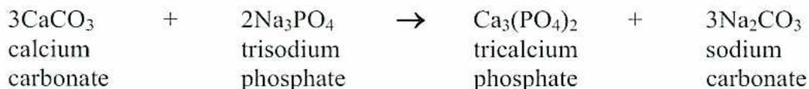
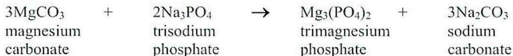
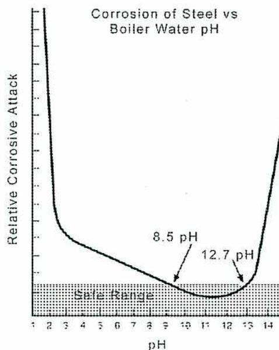

When you complete this learning material, you will be able to:
Describe boiler internal water treatment processes.
You will specifically be able to complete the following tasks:
Explain the causes, effects, and control of scale.
Boiler scale is a relatively hard layer of mineral deposit that forms on the waterside of boiler metal. Scale formation usually occurs in the hotter areas of the boiler, particularly in the steam generating sections, but is not restricted to these areas. Most susceptible are the generating tubes, including those in the banks of risers and in the waterwall sections of watertube boilers.
Firetube boilers are not exempt since scale can form on the waterside of the firetubes and on the internal combustion chamber.
The main cause of boiler scale is the presence of scale-forming minerals in the boiler water. The chief culprits are calcium and magnesium since they generally exist in large quantities, compared to other impurities, and they form deposits quite readily. Other deposits of concern are formed from iron, copper, aluminium, and silica.
A porous scale forms on the waterside of heating surfaces when the water boils leaving mineral deposits behind. The chief effects of this scale deposition are as follows:
On the waterside of a heating surface, the scale acts as an insulator that restricts the transfer of heat from the furnace or combustion gases to the water. This results in a reduction in the cooling effect that the water has on the metal and causes the temperature of the metal to increase.
If the scale is allowed to progressively thicken, the metal temperature may become high enough to reduce the strength of the metal. The metal can weaken to the point that it no longer withstands the internal pressure of the boiler. At this point, rupture of the metal will occur.
When scale forms, there may be voids or pockets created between the scale and the tube surface. Water can be trapped in these pockets, and when the trapped
The second common method involves the use of a special chemical, called a chelate , which reacts with the scale-forming minerals and prevents them from coming out of solution in the boiler water. This treatment type is common on boilers that operate below 4000 kPa.
Polymer-only treatment programs use only polymers and contain no phosphates or chelants. They contain synthetic organic polymers to combine with and disperse any minerals in the water. The polymers can also disperse and transport iron. These programs are suitable at pressures up to 10 Mpa using high purity water as produced by ion exchange.
When sodium phosphate compounds are injected into boiler water, they react chemically with the calcium and magnesium compounds in the water. The reactions cause the calcium and magnesium carbonates to combine with the phosphate and precipitate out, or come out, of solution.
Calcium and magnesium phosphates are produced by the reactions. These compounds are virtually insoluble in water, so they come out of solution. Sodium carbonate is also produced, but it does not come out of solution and can be removed by blowdown.
The most common chemicals used are orthophosphates , including monosodium, disodium, and trisodium phosphates (so named because of the number of Na ions in the chemical), and more complex polyphosphates. In all cases, upon entering the boiler water, the chemical converts to trisodium phosphate ( \( \text{Na}_3\text{PO}_4 \) ) and then enters into a reaction with calcium and magnesium. Simple examples of such reactions are as follows:

| $$ 3\text{CaCO}_3 + 2\text{Na}_3\text{PO}_4 \rightarrow \text{Ca}_3(\text{PO}_4)_2 + 3\text{Na}_2\text{CO}_3 $$ | ||||||
|
calcium
carbonate |
+ |
trisodium
phosphate |
→ |
tricalcium
phosphate |
+ |
sodium
carbonate |

| $$ 3\text{MgCO}_3 + 2\text{Na}_3\text{PO}_4 \rightarrow \text{Mg}_3(\text{PO}_4)_2 + 3\text{Na}_2\text{CO}_3 $$ | ||||||
|
magnesium
carbonate |
+ |
trisodium
phosphate |
→ |
trimagnesium
phosphate |
+ |
sodium
carbonate |
Note: Reaction 2 is actually an undesirable reaction, since magnesium phosphate is a very sticky, adherent precipitate. However, if silica is also present in the water,
Explain the causes, effects, and control of foam in boiler water.
Foaming is characterized by the formation of bubbles (foam or froth) on the surface of the boiler water. The foam is lighter than water and is easily carried by the steam, through the separators and scrubbers, out of the steam drum.
Boiler water conditions that contribute to foaming include the presence of highly organic substances and the presence of a high concentration of dissolved and suspended solids. The organic substances, such as oil, combine with the alkalinity in the boiler water to produce a soap-like substance. The solids strengthen the steam bubbles at the surface of the water, preventing them from bursting, and cause them to accumulate as foam. Besides contributing to carryover, foam can cause inaccurate indications of boiler water level. Foaming is controlled or prevented in three main ways:
Continuous blowdown removes a continuous flow of highly concentrated (with dissolved solids) water from the steam drum.
Intermittent blowdown removes suspended solids by regular, manual blowdown of water from the mud drum and/or lower water headers.
Explain the causes, effects, and control of caustic embrittlement.
Caustic embrittlement is a chemical attack on the boiler metal. It is also called intercrystalline cracking. It often goes undetected, and the failure occurs suddenly, with disastrous results. The metal fails in a sudden or brittle manner. An examination of the failed metal shows cracks progressing along the grain boundaries of the metal. The cracks do not penetrate the crystal structures but travel between them; hence, the term intercrystalline cracking.
There are three factors required to produce embrittlement in boiler metal. They are:
All three factors must be present for cracking to occur. The leakage of boiler water and the concentration of the boiler water can occur in areas where boiler tubes are rolled into the boiler drum or headers. In older boilers, cracking often occurred around rivets and riveted seams in boiler drums. Welded drums have virtually eliminated these sites for cracking. Embrittlement may still occur at sites, such as where tubes are rolled into drums or headers, if free caustic is present.
The factor that the boiler operator has the most control over is the water chemistry. If the boiler water does not have embrittlement characteristics, the other factors of stress and leakage can be ignored. At pressures below 6200 kPa, sodium nitrate is the standard for treating embrittlement. The ratio of sodium nitrate to sodium hydroxide must be kept in the desired range.
Explain the causes, effects, and control of return line corrosion.
Return line corrosion refers to corrosion of all return lines in a system. This includes all pumps, tubing, and piping that return steam condensate to the boiler system. The principal causes of return line corrosion are carbon dioxide and oxygen in solution in the condensate. If the condensate system is not protected, corrosion will result and lead to leaks. As corrosion takes place, compounds (such as iron and copper compounds) are formed. They make their way back to the boiler system and can form deposits in the economizer and the boiler tubes.
Carbon dioxide, oxygen, and ammonia are the common gases that cause corrosion in condensate systems. As carbon dioxide dissolves, it forms carbonic acid, which lowers the pH, causing metal corrosion. When oxygen is also present, the corrosion process is accelerated. In systems containing copper alloys, ammonia is very corrosive if the proper pH is not maintained. Oxygen increases the corrosion rate.
Oxygen corrosion is characterized by pitting in the piping systems. Pitting occurs at the bottom of the pipe, often under deposits such as iron deposits. The pits are small but often deep into the metal. The pattern of pitting may be quite random and can cover a very localized area or a wide area. In either case, oxygen pitting can progress rapidly and result in rapid failure of the metal.
The oxygen is carried over with steam from the boiler. It may enter the system from areas that run below atmospheric pressure. The surface condenser and its piping are susceptible to air in-leakage, allowing oxygen into the condensate system. Pump seals on the suction side of extraction pumps are also common leakage sites. Oxygen may be introduced through makeup water, leakage into condensate return pumps, or leaking cooling or sealing water on transfer pumps. If the oxygen is allowed to get past the pretreatment deaeration equipment and reach the boiler, much of it will be released with the steam, but some of it will directly attack the boiler metal.
Vulnerable spots for oxygen corrosion are the feedwater injection pipe, the steam drum (particularly at the water level), and the boiler downcomers. If the boiler has an economizer, the majority of corrosion occurs in the economizer tubes -- the first area the water is exposed to increased temperature. Oxygen that gets through the boiler and exits
Ammonia can be fed to the system as ammonium hydroxide or ammonium sulphate. At boiler water temperatures, the ammonia is vaporized with the steam from the boiler. When the steam condenses in the system, it absorbs the ammonia. The ammonia neutralizes the \( \text{CO}_2 \) in the condensate. The use of ammonia is limited because ammonia is very corrosive to copper- and zinc-bearing metals. Common areas where copper is found in condensate systems are valve parts, pump seals, and heat exchanger tubes. Systems can be designed to contain no copper or zinc, if ammonia is to be used for condensate pH control.
Ammonia is very stable and can be used for very high temperatures. It has been used for temperatures as high as \( 650^\circ\text{C} \) . Ammonia is the recommended compound for use in the condensate systems of high temperature and high-pressure boiler systems. An ammonia concentration of 0.5 mg/L will assure a protective pH in the condensate.
Neutralization of \( \text{CO}_2 \) can safely be accomplished by certain volatile amines such as cyclohexylamine ( \( \text{C}_6\text{H}_{11}\text{NH}_2 \) ) and morpholine ( \( \text{C}_4\text{H}_9\text{NO} \) ). These amines, when fed to a boiler, volatilize (carryover) with the steam and combine with the carbon dioxide in the condensate to neutralize its acidity. Unlike ammonia, these amines in low concentrations are not corrosive to copper- and zinc-bearing metals. A combination of neutralizing amines with widely varying volatility characteristics assures uniform distribution. Morpholine and cyclohexylamine are specified instead of ammonia for extensive condensate systems such as process piping networks.
Filming amines function on a different principle than neutralizing amines. Filming amines do not neutralize carbon dioxide. They function by forming an impervious non-wettable film on the contacted metal surfaces. The film acts as a barrier between the metal and the condensate, protecting the metal from oxygen and carbon dioxide attack.
The filming amines used in the prevention of corrosion are high molecular weight amines and amine salts having straight carbon chains containing 10–18 carbon atoms. Octadecylamine ( \( \text{C}_{18}\text{H}_{37}\text{NH}_2 \) ), hexadecylamine ( \( \text{C}_{16}\text{H}_{33}\text{NH}_2 \) ), and dioctadecylamine ( \( \text{C}_{36}\text{H}_{74}\text{NH} \) ) are examples of filming amine chemicals.
Steam condensate is used in preparing the chemical filming amine solution. It is fed with a chemical pump to the main steam line for mixing with the steam. The filming amines are dispersed with the steam and carried through the steam and condensate lines. The amines form a non-wettable film on the metal surfaces contacted.
Explain the use of chelating agents in boiler water.
Chelate treatment uses chemicals, called chelates (or chelating agents), to hold scale-forming impurities in solution, not allowing them to precipitate out of the boiler water. It could be considered the opposite of phosphate treatment, which relies on precipitation.
The principle by which chelates act is often called solubilization . Calcium and magnesium as well as iron are kept soluble in the water and prevented from forming scale and sludge.
Chelates are weak organic acids, which have been neutralized into sodium-based salts (compounds which contain sodium). The two most common chelating agents are:
When chelates enter the boiler water, they hydrolyze into strong organic ions. These ions then attract the ions of calcium, magnesium, and iron that already exist in the water. In this way, the chelates absorb these ions. Once absorbed, the calcium, magnesium, and iron will no longer form a deposit and can be removed from the boiler by blowdown.
An advantage of chelate treatment is the removal of existing scale from a boiler without removing the boiler from service. If a carefully controlled amount of excess chelate is injected, the chemical will absorb calcium, magnesium, and iron, not only from the water, but also from the existing scale. Great care must be taken not to remove scale too quickly as it can lead to the sludge sloughing and collecting into locations that restrict water circulation. This practice is discouraged for heavily scaled boilers. Chelates are also more forgiving under changing feedwater conditions and can handle small hardness breakthroughs, either directly, or by subsequent absorption of resulting scale.
Some disadvantages of chelate treatment are as follows:
Explain the use of sludge conditioning in boiler water.
The sludge, or precipitate, that is produced in the precipitation reactions must be conditioned so it will stay well dispersed and will not adhere to the boiler surfaces. This is accomplished by using special chemicals, called sludge conditioners or dispersants . These chemicals are injected into the boiler water, either separately or mixed with other treatment chemicals.
Modern sludge conditioners consist of synthetic polymers , the most common being sulphonated and carboxylated polymers. A polymer is a substance that contains large molecules formed by the joining of several smaller molecules into chain-like structures. A polymer has an ionic or negative charge, which attracts positively charged ions from the water.
When a polymeric dispersant is added to boiler water, it attracts the particles of suspended sludge, due to a weak positive charge that exists on the surface of the sludge. In this way, the sludge particles are prevented from attracting each other to form larger particles and from attracting to the metal surfaces of the boiler. This causes them to remain dispersed in the water until they are discharged through boiler blowdown.
Polymers also have the ability to condition the sludge by changing its structure in such a way that it becomes more crystalline. This results in the sludge being less sticky and having less ability to adhere to boiler surfaces.
A chelate program uses a dispersant that is designed specifically for iron . Since precipitation of scale-forming ions does not occur in a chelate program, the suspended solids in the boiler are reduced. Therefore, the polymers will be more effective in keeping iron and copper in suspension because there is very little calcium and magnesium sludge being generated, and the polymer can concentrate more on other suspended solids, like iron and copper.
Explain the use of pH control in boiler water.
Boiler water is generally corrosive to metal when the pH is outside the range of 8.5 to 12.7. When the pH is less than 8.5, acidic corrosion occurs. The safe range is shown in Fig. 1. This type of corrosion accelerates as the pH decreases.

The graph illustrates the relationship between the relative corrosive attack on steel and the pH of boiler water. The y-axis represents the 'Relative Corrosive Attack' and the x-axis represents the 'pH' from 1 to 14. The curve starts at a high corrosive attack at pH 1, drops sharply to a minimum at pH 8.5, and then rises sharply again after pH 12.7. A shaded 'Safe Range' is indicated between pH 8.5 and 12.7.
| pH | Relative Corrosive Attack |
|---|---|
| 1 | High |
| 2 | High |
| 3 | High |
| 4 | High |
| 5 | High |
| 6 | High |
| 7 | High |
| 8 | High |
| 8.5 | Minimum |
| 9 | Low |
| 10 | Low |
| 11 | Low |
| 12 | Low |
| 12.7 | Minimum |
| 13 | High |
| 14 | High |
Figure 1
Corrosion of Steel vs. Boiler Water pH
Low pH is commonly referred to as acidity . Acids are known to be very corrosive to most materials, including metals. In a boiler, continuous operation at low pH can result in the loss of the magnetite layer and a general thinning of the metal and/or localized thinning in areas of high stress.
During normal operation, low pH may occur when the feedwater (particularly the returning condensate) becomes contaminated with process materials of low pH. Another cause may be improper operation of pretreatment demineralizers that use acid to regenerate the cation resin, allowing low pH water into the boiler.
Coordinated phosphate programs seek to maintain a balance between pH and the phosphate ( \( \text{PO}_4 \) ) concentration that results from chemical addition. pH is kept at a level below that at which free hydroxyl ions ( \( \text{OH} \) ) will exist in the water. This level is avoided by keeping a ratio of sodium ions to phosphate ions below 3:1, so that trisodium phosphate ( \( \text{Na}_3\text{PO}_4 \) ) will not be formed. Trisodium phosphate would tie up phosphate ions without utilizing any hydrogen, so that the hydrogen that exists would be free to combine with oxygen and form corrosive sodium hydroxide. At a lower pH, monosodium phosphate ( \( \text{NaH}_2\text{PO}_4 \) ) and disodium phosphate ( \( \text{Na}_2\text{HPO}_4 \) ) are the dominant phosphate forms, and since they tie-up hydrogen ions, sodium hydroxide cannot exist.
Congruent phosphate control is preferred when the operating pressure exceeds 6900 kPa, because at this higher pressure, acid corrosion is more likely to occur, and a higher boiler water pH is needed to counter it. Congruent control maintains a ratio of sodium ions to phosphate ions between 2.6:1 and 2.8:1, and the control point is usually near the low end of this range.
At boiler pressures above 17 200 kPa, phosphate hideout becomes a concern. This is a phenomenon that occurs when the phosphate in the boiler water adsorbs onto the boiler tube magnetite layer and concentrates in regions of porous deposits. Phosphate solubility is considerably reduced as the pressure increases, so that less and less phosphate can be held in solution in the water. The phosphate concentration cannot be raised by adding more chemical, since the water is already saturated with phosphate. A boiler upset causing a pressure drop will result in large quantities of phosphate suddenly re-dissolving throughout the boiler, increasing the dissolved solids content and creating a risk of additional corrosion and carryover. To avoid this, boilers in this pressure range may use an equilibrium phosphate control program, whereby only as much phosphate is added as can be maintained in solution. The actual amount that can be used must be determined experimentally, or through careful analysis of the water and calculation of the amount of phosphate concentration that can be carried.
Blending of different types of phosphates controls the pH operating range of the boiler. The boiler water must have the specified phosphate residual level, and be in the desired pH range, for the treatment program to function properly. Fig. 2 illustrates the type of control table used to control boiler water using coordinated phosphates. The arrows show the direction the pH will move in by adding different phosphates, or by changing the blowdown setting. Various combinations and feed rates of phosphate, blowdown adjustment, and caustic addition are used to maintain the desired levels of pH and phosphate.